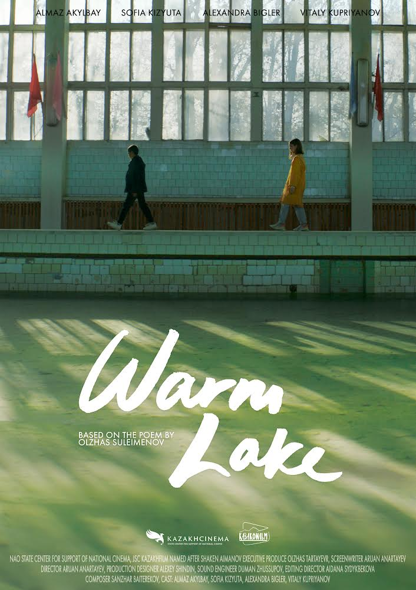
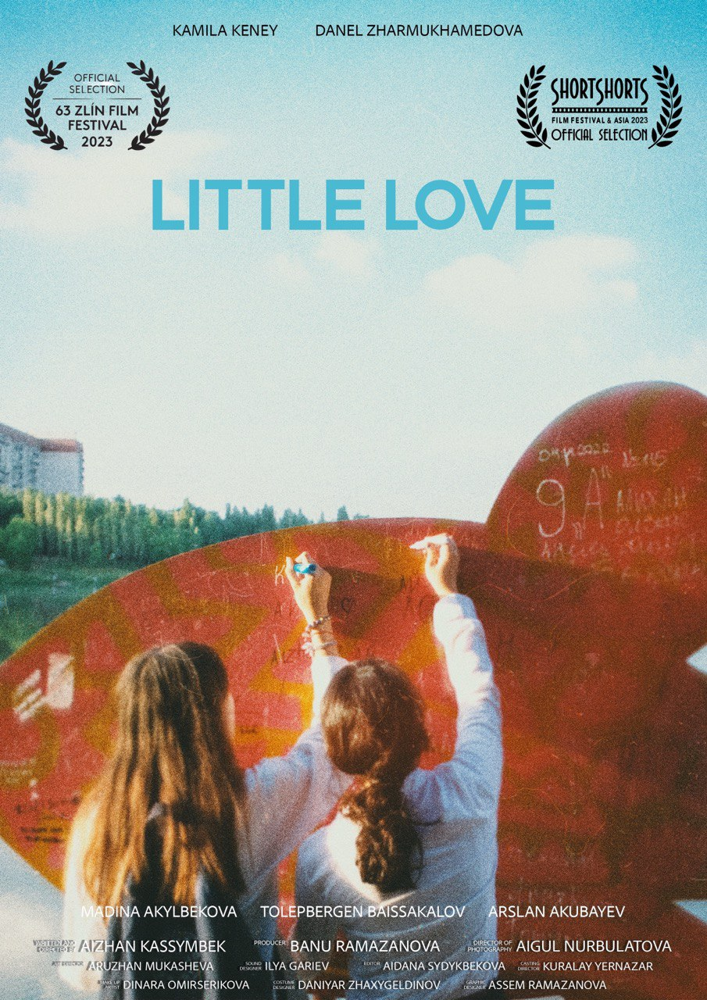

2020 · Feature film · 82'
OT / Fire
Editor
Dir. Aizhan Kassymbek · Kazakhstan
Dramedy about routine, debt, family pressure, and a father forced into a difficult conversation about the future.
Precision editing, cinematic rhythm, and authored visual storytelling — based between Tbilisi and Almaty, available worldwide.




What I do
Aidan Serik is a film editor and director based between Tbilisi and Almaty, working internationally across documentaries, fiction, and artist-driven visual projects. Her work is defined by emotional precision, strong cinematic structure, and a refined sense of rhythm.
The site is intentionally restrained: refined typography, dark cinematic contrast, poster-led presentation, and subtle motion that supports the work instead of overpowering it.
For editing, directing, and collaboration inquiries, get in touch by email.